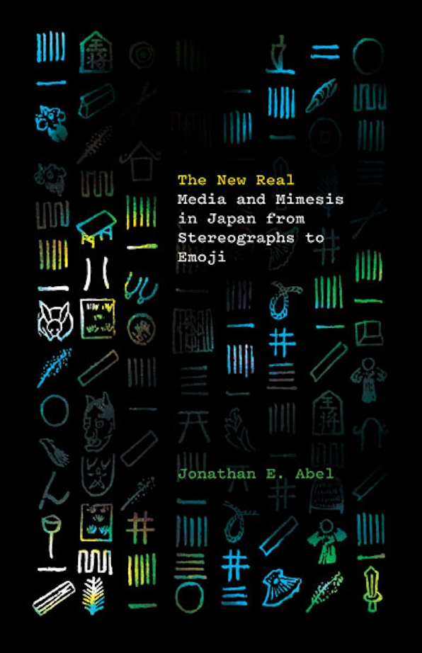
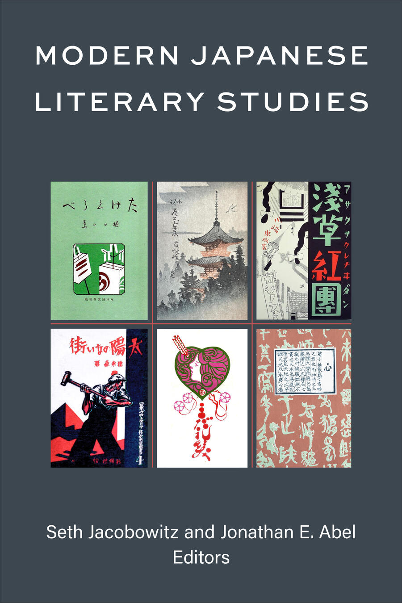
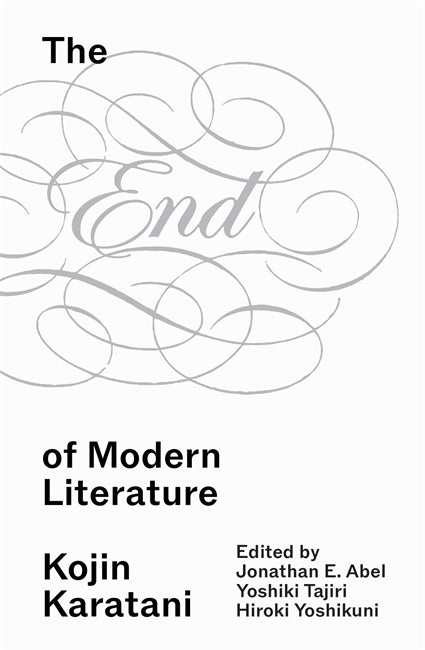
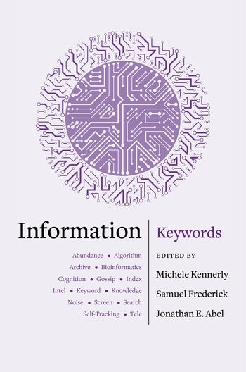
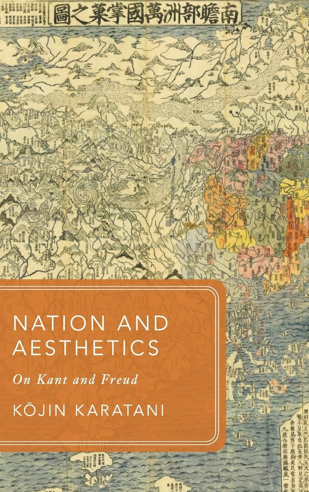
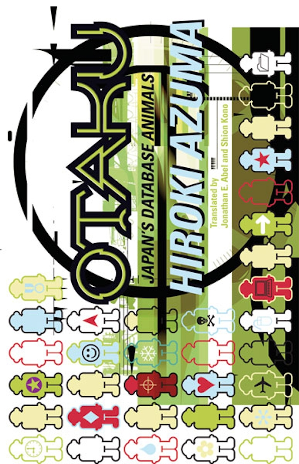

Jonathan E. Abel
Professor of Comparative Literature and Japanese Studies
Penn State University
I work on how cultural forms—novels, films, emojis, social media fiction—make meaning and, in doing so, reshape the worlds we inhabit. My research focuses on Japanese media, film, and literature, with interests in global modernism, censorship, translation, new media, and cultural theory. My books include The New Real: Media and Mimesis in Japan from Stereographs to Emoji (University of Minnesota Press, 2023) and Redacted: The Archives of Censorship in Transwar Japan (University of California Press, 2012), which received the Weatherhead East Asia Institute First Book Award.
More about me
My path to Japanese literature was less a single conversion moment than a long drift: late‑night Godzilla and Seven Samurai TV broadcasts in the 1980s, judo classes that didn't quite stick, and an ill‑considered childhood bet involving a spoonful of wasabi. After college, two years on the JET Program in a small town on Japan's west coast and a multivolume, yellow‑covered bilingual edition of Sherlock Holmes (example volume) taught me to read across languages; later, making Japanese TV commercials in New York and Los Angeles deepened my interest in media and film.
I still think of myself as an "eternal student." At heart, I'm trying to show that cultural products are not just entertainment but tools for grasping how the world works. Words can wound or console, films can unsettle or reassure, interfaces and buildings can quietly shape how safe or seen we feel. Comparative Literature, with its boundary‑breaking, hard‑to‑pin‑down nature, and Asian Studies, with its continual ability to get me to think outside of my own upbringing, are my homes for thinking about how cultural forms travel, echo, repeat with a difference, and construct our social world—even now, in a moment marked by pandemics, strife, AI, and rapid media change.
Latest news
All news →

Current Research
CineMAP Japan
A digital project that geotags and visualizes film locations to reveal how space matters and what places mean for cinema.
State of the Field
A quantitative network analysis of Japanese Literary Studies as an academic discipline—tracing dissertation networks, conference data, and citation patterns across 7,900+ dissertations and 5,100+ scholars.
Ratiocination Quantified
Computational analysis of Poe's influence on Doyle: dialogue patterns, character networks, narrative structure, and spatial organization in "The Purloined Letter" and "A Scandal in Bohemia."
A Computational History of North American Comparative Literature
An interactive atlas of the field across a century of its flagship journals, conferences, and dissertations—author networks, conceptual lineages, and the job market.
Social Media Fiction
Examines microfiction posted on Twitter and Instagram as test cases for policies about tagging fake news on social media.
Book in Progress
Subtitling the World: Fake News, Fictional Truth, and Social Media explores how literature is changing the world today through micro-blog platforms.
Books
Monographs
The New Real: Media and Mimesis in Japan from Stereographs to Emoji
University of Minnesota Press, 2023
Read Open Access →Redacted: The Archives of Censorship in Transwar Japan
University of California Press, 2012. Winner, Weatherhead East Asia Institute First Book Award
View at UC Press →Edited Volumes

Modern Japanese Literary Studies
Co-edited with Seth Jacobowitz. University of Michigan Press, 2026
View at U of Michigan Press →
Kojin Karatani's The End of Modern Literature
Co-edited with Yoshiki Tajiri & Hiroki Yoshikuni. Verso, 2026.
View at Verso →
Information: Keywords
Co-edited with Samuel Frederick & Michele Kennerly. Columbia University Press, 2021
View at Columbia UP →Translations

Nation and Aesthetics
By Kojin Karatani. Co-translated with Hiroki Yoshikuni & Darwin Tsen. Oxford University Press, 2017
View at Oxford UP →
Otaku: Japan's Database Animals
By Hiroki Azuma. Co-translated with Shion Kono. University of Minnesota Press, 2009
View at U of Minnesota Press →Teaching
I teach courses on Japanese literature, media studies, comparative literature, and translation. My favorite classes are the ones where students build things—arguments, stories, reshot film scenes—that transform how we all understand the texts and images in front of us.
Office Hours
Sign up for office hours using the online scheduling tool.
Recent Courses
Archived course sites, 1999–2026 → Every course by year, searchable by topic (film, media, literature, theory, Japanese language and more).
- JAPNS 120W · Spring 2026 — Japanese Literature in its Cultural Context
- CMLIT 184 · Spring 2026 — The Short Story
- CMLIT 400Y · Fall 2025 — Criticism and Theory
- JAPNS 434 · Spring 2025 — Beyond Anime
- JAPNS 121N · Fall 2023 — Japanese Film and New Media
Contact
Email: jea17@psu.edu
Office: Department of Comparative Literature, Penn State University
Japanese researcher profile: NIMOU (Nichibunken)